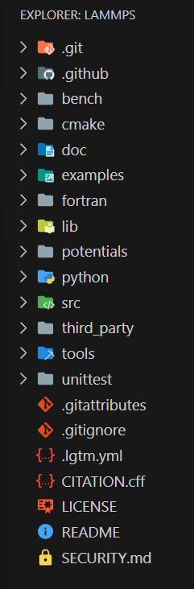

深挖Lammps的源代码 - Delving Deeply into Lammps Source Code
中文版 - Chinese Version
(See the English version below)
Lammps是一个分子动力学模拟软件，擅长并行运算。我打算用一点时间，尽我所能，深挖一下Lammps的源代码。
我的目标是：
- 掌握Lammps的项目结构
- 掌握Lammps的工作流程
- 掌握MD模拟的流程
- 着重掌握有关pair的部分，因为未来的工作中可能需要自定义原子势能。
- 修改，并编译Lammps的源代码
- 总结出一些深挖项目代码的经验，最好是通用流程
一些有用的链接： - Lammps的官方网站 - Lammps的源代码 - Lammps的文档 - Lammps的文章
本文使用的Lammps的源代码为2025-05-03的实时版本（即Large-scale Atomic/Molecular Massively Parallel Simulator - 2 Apr 2025 - Development）。下文中提到的文件名和行号均基于此版本。
使用git clone https://github.com/lammps/lammps.git命令下载Lammps的源代码。
Lammps的项目结构

Lammps项目遵守典型的C++科研类项目架构。本段为不熟悉c++项目架构的读者简单介绍一下各文件/文件夹的内容：
顶层文件
- README：项目的简介，目录，相关文档的位置。
- LICENSE：项目的许可证，即说明其他人可以如何使用这个项目。
- CITATION.cff：如何引用这个项目。
代码
- src/：Lammps的源代码，实现各种Lammps的核心功能。这也是深挖的主要目标。
- lib/：一些Lammps的插件/扩张（比如GPU加速，机器学习势能，python）的源代码或接口，需要单独编译。
- cmake/：CMake构建脚本与模块，用于编译Lammps（即从c++源代码生成可执行程序）
- python/和fortran/：Lammps的python和fortran接口，允许用户使用python或fortran调用Lammps。
- potentials/：Lammps的势函数，包含了Lammps支持的所有势函数文件。
工具
- tools/：一些预处理/后处理，类型转换的小程序。
- unittest/：Lammps的单元测试代码，测试Lammps的功能是否正常。
- bench/：用于测试不同编译条件下Lammps的性能。
文档
- doc/：Lammps的文档，包括用户手册、开发者手册、教程等。
- examples/：Lammps的示例脚本和输入文件。
其他
- .github/: 一些和提交有关的文件，包括CI（持续集成）工作流、Issue/PR 模板、贡献指南。
- third_party/：指向第三方库的链接。
Lammps的一般工作流程
当运行Lammps时，会首先运行src/main.cpp中的main()函数。该函数是Lammps的入口函数。这其中：
auto lammps = new LAMMPS(argc, argv, lammps_comm);会创建一个LAMMPS对象。该对象管理Lammps的所有功能。
（注：在VSCode右键点击LAMMPS，选择Go to Definition，可以自动打开src/lammps.h文件，然后寻找同名的src/lammps.cpp文件，即可找到对应的定义。具体而言，它从src/lammps.cpp文件的第132行开始。对于其他的类或函数，也可以用类似的方法找到其声明或定义。）
在LAMMPS类的定义中：
首先，其创建Memory，Error对象，用于内存管理和错误处理。
在第238行，其读取命令行参数（比如-h，-in）并设置flag。
然后，第492行定义了partition并行的逻辑。
在第701行初始化Kokkos（gpu/并行加速模块，如果用到的话），引用模块，输入模块等。
在第715行，初始化input对象，用于读取、解析和执行用户提供的LAMMPS输入脚本命令。
在第740行，调用了create()函数，用于初始化核心模拟组件类，包括：
comm（并行计算中的通信）neighbor（邻居列表构建和管理）domain（管理模拟盒子和边界）atom（管理原子数据）group（管理原子组）force（管理力场力）modify（fix命令和compute命令）output（管理输出）update（管理模拟过程中的时间步进，积分，最小化算法）timer（性能计时）python（python接口）
等类。这些类之间的关系见下图（来源）。
所有核心模拟组件类都继承了Pointer类，包含了指向其他核心组件的指针。所以这些类的对象都可以互相访问。
此外，740行还调用了post_create()函数，用于配置加速器包（kokkos，intel，gpu和openmp）。
main()函数在初始化lammps对象完成后，会执行lammps->input->file();来读取输入文件。具体而言，首先调用lammps对象的input类，然后调用其内部的file()函数读取并逐行执行命令（src/input.cpp
第195行）。
在file()函数中，其使用mpi rank
0的进程从infile逐行读取文件，然后广播至其他进程。之后，各进程使用parse解析命令，然后调用execute_command()(第313行)函数来调用相关处理函数，执行每一行命令。
在execute_command()中（第764行），一些命令被硬编码了专门的处理函数，比如bond_coeff，dump，thermo等，在其中再调用其他模块中相关的函数来执行。
另一些命令在command_map中被映射到相应的处理函数，比如run，则调用其对应的command()函数（第868行）。
所有命令都执行完毕后，Lammps中止MPI，优雅退出。
MD模拟流程
一份极简的官方MD（Molecular Dynamics，分子动力学）模拟的输入文件如下所示：
1 | units real |
其中，spce.mol是一个文件，内容如下：
1 | # Water molecule. SPC/E geometry |
本模拟向box中填充了33个刚性spc/e水分子，先对系统做能量最小化，然后做NVT模拟，在300K下运行20000步。并使用thermo命令输出过程中物理性质。让我们一行一行地分析一下此MD模拟的流程。
设置模拟环境
第一个命令是units real。即使用真实单位（real
units）系统。units命令调用了定义在src/input.cpp的第2003行的Input::units()函数。在函数中，做了一些参数检查后，调用了update对象的set_units()函数（以下简记为update->set_units()函数），并把第一个参数传了进去。set_units()函数具体在src/update.cpp的134行。当检测到units为real时，对force对象中的一些物理常数和单位进行设置，包括玻尔兹曼常数，单位转换常数，电子电荷量等等。
atom_style full命令定义了原子的类型和属性为full(即包含全部的原子参数，包括坐标，键，键角，二面角，电荷...)。它创造了一个AtomVecFull类的实例，用于管理原子数据，并设置其可能的拓扑类型（比如是否可以含有键角，二面角等等）。此类在src/MOLECULE/atom_vec_full.cpp中定义。该类继承了抽象的AtomVec类（在src/atom_vec.cpp中定义）。
region box block -5 5 -5 5 -5 5命令定义了一个正方体的区域，边长为10。此命令调用了domain->add_region()函数（src/domain.cpp第1967行）进行参数检查，id重复检查之后，调用region_creator()函数。此函数是一个模板函数（src/domain.cpp第55行），其本质上通过region_map查找并创建region对象（主要功能包括计算各边顶点，各面法向量，定义在src/region_block.cpp）。最后，回到add_region()函数，将region对象添加到domain->regions列表中。
create_box调用了
映射到command_map中的函数CreateBox::command(),此函数其定义在src/create_box.cpp中。在做了一些检查后，从196行开始，通过bond/types等关键词，定义atom对象的nbondtypes，nangletypes，bond_per_atom，angle_per_atom属性。
设置力场参数
mass 1 15.9994命令设置了原子类型1的质量为15.9994。mass命令调用了atom->set_mass()函数（src/atom.cpp第1933行）。
pair_style lj/cut/coul/cut 10.0命令设置了原子之间的相互作用力为lj/cut/coul/cut，截断距离为10.0A。具体而言，它规定了原子之间的相互作用力包括有截断半径的范德华力（lj/cut）和有截断半径的库仑力（coul/cut）。此命令会调用在src/input.cpp第1787行的input->pair_style()函数，当检查过之前没有定义pair_style后，在1807行，其调用force->create_pair()函数（在src/force.cpp
第227行）以创建pair相互作用。
在create_pair函数中，调用force->new_pair()函数（247行），其内部在pair_map中查找，所设置的pair样式是否有对应的类（在本例中，pair样式为lj/cut/coul/cut，对应的类为PairLJCutCoulCut（在src/pair_lj_cut_coul_cut.cpp中的33行））。如果有，则调用pair_map中pair样式对应的函数，并返回生成的Pair对象的指针。
pair_map本身的生成过程很精妙。其定义在src/force.cpp第89行：pair_map = new PairCreatorMap();。这一行创建了一个空PairCreatorMap对象，并将其指针存储在pair_map中。PairCreatorMap对象本身是一个映射，其键是形如“lj/cut/coul/cut”的字符串，而值是一个函数指针，此函数将返回一个指向Pair类型的指针。
第92行定义了一个宏PairStyle，其接受两个参数key和Class。其作用则是将&style_creator<Pair, Class>赋值给(*pair_map)[#key]。比如PairStyle("lj/cut/coul/cut", PairLJCutCoulCut)就等于(*pair_map)["lj/cut/coul/cut"] = &style_creator<Pair, PairLJCutCoulCut>;。这其中，style_creator是一个通用的工厂函数，在src/force.cpp的第41行定义。其作用是动态创建一个Class对象（在本例中为PairLJCutCoulCut对象），并返回指向此对象的指针。
每个以pair_开头的头文件都包含#ifdef
PAIR_CLASS块，其中使用PairStyle宏。在编译过程中将生成style_pair.h文件，其包含所有以pair_开头的头文件。第93行的#include "style_pair.h"可以将这些文件对应的类注册进pair_map中。额外说一句，对于一个src文件夹下的.cpp文件，可以通过查看其对应头文件的开头部分，来大致判断其会对应哪个输入脚本的命令。比如PairStyle("lj/cut/coul/cut", PairLJCutCoulCut)对应的就是pair_style lj/cut/coul/cut命令，而FixStyle(nvt,FixNVT);对应的就是fix nvt命令。
上述 创建不同类型的Pair实例的编程模式 叫做“Style Factory”。此编程模式被很多其他的功能所采用，包括创建Bond，Angle，定义Command，添加Fix等等，以及上文提到定义atom style。官方文档1和官方文档2中有对此过程的详细介绍。
在create_pair创建完Pair对象后，返回到pair_style()函数，并再次调用force->pair对应的settings()函数（在本例中为PairLJCutCoulCut::settings()函数，在src/pair_lj_cut_coul_cut.cpp的第191行）设置Pair对象的cutoff参数。
pair_coeff命令设置了各种原子类型之间相互作用力参数，其函数为PairLJCutCoulCut::coeff()，定义在src/pair_lj_cut_coul_cut.cpp的第218行。其读取原子类型1，原子类型2，epsilon，sigma等参数，并储存。
对bond的设置也是类似的。即先进入force->create_bond()函数，在bond_map中查找bond_style的对应类，然后创建bond对象。bond_coeff命令则是设置bond对象的参数。angle同理。
填充分子
molecule water spce.mol命令定义了一个分子类型water，其拓扑结构在spce.mol文件中。molecule命令调用到了src/atom.cpp的atom->add_molecule()函数，在其中新建Molecule对象，读取spce.mol文件，解析分子拓扑结构，并将其存储在atom对象的molecules中。Molecule对象定义在src/molecule.cpp中。读取spce.mol文件的函数为Molecule::read()，在第425行。
create_atoms 0 random 33 34564 NULL mol water 25367 overlap 1.33命令则是创建了33个water分子，随机分布在模拟盒子中。create_atoms也调用了一个映射到command_map中的函数：CreateAtoms::command()（在src/create_atoms.cpp第97行）。在此函数中，从第120行开始，其开始解读参数（我们的参数为0 random 33 34564 NULL），从197行开始解读关键字（我们的关键字为mol water 25367 overlap 1.33）。经过了复杂的检查，在第532行，调用了add_random()函数。
在add_random()函数中，首先设置随机数生成器，然后依据region确定填充边界。然后在第835行进入主循环：外层循环nrandom次（在本例中是33），即尝试插入nrandom个分子。内层循环maxtry次（默认为1000），即最多尝试maxtry次，来寻找一个有效的位置。
在内层循环中，首先生成随机坐标，然后检查是否在区域内，如果定义了overlap，则检查插入的分子的各原子坐标是否现有原子有重叠。MPI进程0计算构成新分子的所有原子的坐标，而其他MPI则并行检查分子中每一个原子是否与已有的原子重叠。
如果通过了所有检查，则调用add_molecule()函数（在src/create_atoms.cpp的第1595行），将分子添加到atomvec中。
模拟前处理
timestep 1.0命令设置了时间步长为1.0
fs。其调用input->timestep()函数，设置update->dt为1.0
fs。
fix rigid all shake 0.0001 10 10000 b 1 a 1命令使用SHAKE算法设置了分子中编号为1的键和编号为1的键角的约束，保持水分子刚性。fix命令调用了modify->add_fix()，在其中，再次使用Style
Factory模式，创建了src/RIGID/fix_shake.cpp中定义的FixShake对象，并将其添加到modify->fix列表中。
minimize 0.0 0.0 1000 10000命令执行了能量最小化。其调用了Minimize::command()函数，在其中，设置了一些update对象的参数（比如能量判据，力判据）后，执行了update->minimize->run()函数（定义在src/min.cpp第423行）。在此函数中，其将调用iterate()函数进行能量最小化计算。本命令使用Lammps中默认的最小化算法，即cg算法（Conjugate
Gradient），iterate()函数在src/min_cg.cpp中定义。
velocity all create 300.0 5463576命令设置了所有原子的初始速度为300K。此命令调用了Velocity::command()函数（在src/velocity.cpp49行）。然后其调用了Velocity::create()函数（第160行），为所有的原子分配速度。
注：注意到velocity命令会为所有原子随机分配初始速度（第274行），这意味着同一分子内的原子的初始速度大概率各不相同，导致分子内部的键和键角会在模拟的第一步受到很大的力。这也许是个问题，可能导致更容易发生崩溃。
fix integrate all nvt temp 300.0 300.0 100.0命令设置了NVT积分器。和之前相同，fix命令调用了modify->add_fix()，创建了FixNVT对象（定义在src/fix_nvt.cpp），并将其添加到modify->fix列表中。FixNVT这个类（以及NPT，NPH类）又继承了FixNH类（“NH”指的是“Nose-Hoover”，定义在src/fix_nh.cpp）中。注，此fix并不会覆盖上文中的fix
rigid。
运行模拟及输出
thermo_style命令设置了thermo输出的格式。其调用了output->create_thermo()函数（在src/output.cpp第899行）。在create_thermo，其检查是否已经设置了thermo对象，如果没有，则创建一个新的Thermo对象（定义在src/thermo.cpp）。创建时，其在第172行调用thermo->parse_fields()函数处理step temp press etotal density pe ke等参数。
注：我不太喜欢这里的程序设计理念。相比于thermo_style命令，创建新Thermo对象的功能应该放在thermo命令里，或者用new thermo t1这种命令显式地新建。
thermo 1000命令设置了每1000步输出一次thermo数据。其调用了Thermo::set_thermo()函数（在src/thermo.cpp第195行），设置了output->thermo_every为1000。
run 20000 upto命令运行了上文定义的NVT模拟，运行至20000步（包含minimize的步数）。其调用了Run::command()函数（在src/run.cpp第37行）。
默认的update->integrate为verlet（见src/update.cpp第91行）。在设置了必须的参数（比如需要模拟的步数）并初始化了组件之后，其在第176行调用了update->integrate->run()函数（定义在src/verlet.cpp229行），正式开始做分子动力学模拟。在此函数中，其总共执行nsteps次循环（在本例中略小于20000步），每次循环模拟一个时间步。
注：Lammps默认使用的Velocity Verlet算法是分子动力学中最常用的算法之一。其在每个时间步中需进行3步：第一次积分用于更新粒子位置，然后利用新粒子位置计算新力，第二次积分用新位置和新力计算粒子的新速度。
在每个循环（从第246行开始）中，首先，先检查是否超时，如果超时，则退出循环。如不超时，则更新当前时间步ntimestep。然后，调用ev_set()函数，以判断在此时间步中是否需要计算能量或位力（Virial，又译维里，系统中粒子受到的力在位置空间上的分布）。
然后，调用modify->initial_integrate()函数，在其中，调用了所有fix对象的initial_integrate()函数，以进行Velocity
Verlet算法中的第一次积分。
接下来，调用neighbor->decide()函数，以判断是否需要更新邻居列表。如不需要更新，则调用comm->forward_comm()，将本处理器的潜在的幽灵原子（即靠近子区域边界的，可能与其他处理器的原子相互作用的原子）的坐标发送至其他处理器。
如果需要更新邻居列表，则调用domain->pbc()将每个原子重新包裹进周期性边界中（如果是三斜晶系还需要调用domain->x2lamda()将原子坐标转换至晶胞相对坐标（即0-1之间））。如果盒子的尺寸改变了，则调用domain->reset_box()重设盒子和子区域的尺寸。然后，使用comm->exchange()将原子转移至正确的处理器中。如果需要，调用atom->sort()对原子重新排序。在这之后，调用comm->borders()更新幽灵原子列表，并将其坐标发送至其他处理器。最后，调用neighbor->build()构建邻居列表。
下一步是计算受力（从第301行开始）。首先，调用force_clear()清除原子受力。然后，依据需求，依次调用
force->pair->compute()force->bond->compute()force->angle->compute()force->dihedral->compute()force->improper->compute()force->kspace->compute()（如果使用长程库仑力）
以计算原子受力。这里以pair->compute()为例。本例中使用的pair
style为PairLJCutCoulCut，其compute()函数定义在src/pair_lj_cut_coul_cut.cpp第65行。在其中，其首先遍历原子，然后遍历此原子的邻居列表，然后计算它们的库仑相互作用和lj相互作用，并将结果叠加到各原子的总受力中。如果开启了牛顿第三定律，则也更新其邻居列表的原子的总受力。
原子受力计算完毕后，如果开启了牛顿第三定律，则执行反向通信，调用comm->reverse_comm()，以更新由于幽灵原子而导致的受力。
最后，计算完各原子的受力之后，在第348行，调用modify->final_integrate()函数，调用了所有fix对象的final_integrate()函数，以进行Velocity
Verlet算法中的第二次积分。
如果本步需要输出，则调用output->write()函数输出thermo数据，dump数据以及restart数据。
在update->integrate->run()函数中，一些重要的步骤（比如第一步积分，构建邻居列表）前后都会判断是否有一些fix
有做一些修正的需求。如有，则调用其对应函数（比如post_integrate，pre_neighbor等）。
此外，在每个重要步骤前后都会调用timer->stamp(); ...; timer->stamp(Timer::CATEGORY);以记录执行时间。
最后，回到Run::command()函数，调用update->integrate->cleanup()函数，做一些清理工作（如有）。
write_data spce.data nocoeff命令将模拟结束后的原子坐标输出到spce.data文件中。其调用了WriteData::command()函数（在src/write_data.cpp第51行）。在其中，调用了write_data->write()函数（在第123行），通过调用atom->lmap->write_data()函数将数据写入文件。
编译Lammps
本文使用VSCode的CMake tools插件编译Lammps。此外，Lammps的官方Cmake编译指南也提供了使用命令行的方式进行编译的方式。
首先打开VSCode，进入到CMake面板，插件会提醒你选择一个CMakeLists.txt文件，在这里选择cmake/CMakeLists.txt。注，如果后续需要更改CmakeLists.txt文件，可以在.vscode/settings.json的"cmake.sourceDirectory"中指定另一个CMakeLists.txt文件的位置。
然后，点击“Configure”按钮下方栏，选择一个编译器。这里我使用的是msys2-mingw64的GCC编译器。（可参考此文章安装此编译器）
在编译器下方栏将build
variant设置为Release，然后点击“Configure”按钮，然后，VSCode会自动创建一个build文件夹，并在其中生成CMakeCache.txt文件。
接下来，点击“Build”按钮，VSCode会自动编译Lammps，并在build文件夹中生成可执行文件。
注：本版本的Lammps有一个bug：在src\image.cpp第53行，其定义的常量ABSOLUTE与全局常量ABSOLUTE冲突了。解决方法是将其改为RANGE_ABSOLUTE，并将本文件中的所有ABSOLUTE改为RANGE_ABSOLUTE。
注2：上文描述的是最简单的编译方法，如果需要其他的功能，比如GPU加速，python脚本处理等，则需要在编译时添加额外的扩展包。即，在.vscode/settings.json中添加"cmake.configureArgs": ["-D PKG_PYTHON=yes", "-D PKG_GPU=yes"]。支持的扩展包的列表。
注3：尽管本次编译使用windows系统，但为了减少潜在的bug，还是建议编译在Linux系统上。
总结
一些阅读源代码的经验：
- 先明确你的需求/目标再行动，不要做无用功。否则非常辛苦，也抓不住重点。
- 建议直接上手使用，或是读文档，以初步了解项目的功能。越了解项目的功能，代码读起来越顺利。
- 先大体了解项目的整体结构和整体工作流程，再定位到 和需求相关的部分精读。
- 多借助包括跳转，搜索等功能的现代IDE（比如VSCode）。
- 读代码时，抓重点，和需求不相关或不重要的功能可以直接跳过。
- 勤用ChatGPT，看不懂就问。
- 还是看不懂的代码直接跳过，大体知道其功能就可以。有时，读完其他部分再回头看时，可能就懂了。
- 注释和官方文档都很重要，其他人的阅读记录也可以参考。看不懂英语就翻译。
主要的收获有：
- 对lammps“开悟了”，（即有了整体性的理解），遇到bug可以清晰地定位。
- 对MD软件应有的组成部分，MD积分计算方法有了更深入的了解。
- 对C++的语法，高级用法，编译有了更深入的了解。
主要遇到的困难有：
- 本项目代码量大，结构复杂。如果不是熟悉MD和Lammps的工作流程的话，需要很长时间才能入门。
- 本人对c++语言和编码规范不够熟悉，导致很多语句不能一眼看出来作用。
- 上述两条困难也导致调试很复杂。
英文版 - English Version
Lammps is a molecular dynamics simulation software renowned for its parallel computing capabilities. I plan to spend some time delving deeply into the Lammps source code to the best of my abilities.
My objectives are:
- Understand the project structure of Lammps
- Grasp the workflow of Lammps
- Master the workflow of molecular dynamics simulations
- Particularly focusing on the "pair" section, as customizing atomic potentials might be needed in future work
- Modify and compile the Lammps source code
- Summarize some useful experiences for deep-diving into project code, preferably general procedures
Some Useful links:
The source code version of Lammps used in this article is the real-time version as of May 3, 2025 (Large-scale Atomic/Molecular Massively Parallel Simulator - 2 Apr 2025 - Development). The filenames and line numbers mentioned below are based on this version.
Download Lammps source code using:
1 | git clone https://github.com/lammps/lammps.git |
Lammps Project Structure
The Lammps project follows a typical structure of scientific C++ projects. For readers unfamiliar with C++ project structures, here's a brief introduction to each file/folder:
Top-level Files
- README: Brief project overview, directory information, and related document locations.
- LICENSE: Project license detailing usage permissions.
- CITATION.cff: Instructions on how to cite the project.
Source Code
src/: Core source code implementing the primary functionalities of Lammps. This is the main focus for detailed analysis.lib/: Source code or interfaces for plugins/extensions (e.g., GPU acceleration, machine learning potentials, Python) that require separate compilation.cmake/: CMake build scripts and modules for compiling Lammps.python/andfortran/: Interfaces allowing users to interact with Lammps via Python or Fortran.potentials/: Contains all potential function files supported by Lammps.
Tools
tools/: Utilities for pre-processing, post-processing, and data conversion.unittest/: Unit tests ensuring Lammps functionality.bench/: Performance benchmarks under different compilation conditions.
Documentation
doc/: Documentation including user manuals, developer guides, and tutorials.examples/: Example scripts and input files.
Others
.github/: Some files related to CI workflows, Issue/PR templates, and contribution guidelines.third_party/: Links to third-party libraries.
General Workflow of LAMMPS
When LAMMPS is executed, it first runs the main()
function located in src/main.cpp. This function serves as
the entry point for LAMMPS. Specifically, the line:
auto lammps = new LAMMPS(argc, argv, lammps_comm); creates
a LAMMPS object that manages all the functionalities of LAMMPS.
(Note: In VSCode, right-click on LAMMPS and select "Go
to Definition" to automatically open the src/lammps.h file.
Then locate the corresponding definition in src/lammps.cpp,
specifically starting from line 132. Similarly, definitions or
declarations for other classes or functions can be found using this
method.)
In the definition of the LAMMPS class:
First, Memory and Error objects are created
for memory management and error handling.
At line 238, command-line arguments (such as -h,
-in) are read and flags are set accordingly.
Then, at line 492, the logic for partition-based parallelism is defined.
At line 701, Kokkos (the gpu/parallel acceleration module, if used), referencing modules, and input modules are initialized.
At line 715, the input object is initialized for reading, parsing, and executing user-provided LAMMPS input script commands.
At line 740, the create() function is invoked to
initialize core simulation component classes, including:
comm(communication in parallel computations)neighbor(building and managing neighbor lists)domain(managing simulation boxes and boundaries)atom(managing atom data)group(managing atom groups)force(managing forces and force fields)modify(handling fix and compute commands)output(managing simulation outputs)update(managing timestep integration and minimization algorithms)timer(performance timing)python(Python interfaces)
These classes' interrelationships are illustrated below (source).
All core simulation component classes inherit from the
Pointer class, which includes pointers to other core
components. Hence, objects of these classes can access each other.
Additionally, line 740 calls the post_create() function
to configure accelerator packages (Kokkos, Intel, GPU, and OpenMP).
After initializing the LAMMPS object, the main()
function executes lammps->input->file(); to read the
input file. Specifically, it first calls the input class of the LAMMPS
object, and then its internal file() function reads and
executes commands line by line (found in src/input.cpp at
line 195).
Within the file() function, MPI rank 0 reads the input
file line by line from infile, broadcasting each line to
other processes. Each process then parses the commands using
parse, followed by calling execute_command()
(line 313) to invoke relevant processing functions and execute each
command.
In execute_command() (line 764), some commands have
hardcoded specialized handling functions (e.g., bond_coeff,
dump, thermo), which subsequently call
relevant functions from other modules.
Other commands are mapped in command_map to
corresponding handling functions. For instance, the run
command invokes its respective command() function (line
868).
After executing all commands, LAMMPS terminates MPI and exits gracefully.
MD Simulation Workflow
An extremely simplified, official MD (Molecular Dynamics) simulation input file is shown below:
1 | units real |
Here, spce.mol is a file containing the following
content:
1 | # Water molecule. SPC/E geometry |
This simulation fills the simulation box with 33 rigid SPC/E water
molecules. It first performs energy minimization on the system, followed
by an NVT ensemble simulation running for 20,000 steps at 300 K. The
thermo command is used to output physical properties during
the simulation. Now, let's analyze the workflow of this MD simulation
step by step.
Setting up the Simulation Environment
The first command is units real, indicating the use of
the real units system. The units command invokes the
Input::units() function, defined at line 2003 of
src/input.cpp. After performing some parameter checks, this
function calls the set_units() function of the
update object (denoted as
update->set_units() in the following text), passing the
first parameter. The detailed implementation of the
set_units() function is located at line 134 of
src/update.cpp. When it detects that units is
set to real, it configures various physical constants and
unit conversions within the force object, including the
Boltzmann constant, unit conversion factors, electron charge, and so
forth.
The command atom_style full defines atom types and
attributes as full (which includes all atom parameters such
as coordinates, bonds, angles, dihedrals, charges, etc.). It creates an
instance of the AtomVecFull class, used for managing atom
data and setting its topology characteristics (such as the presence of
angles and dihedrals). This class is defined in
src/MOLECULE/atom_vec_full.cpp and inherits from the
abstract AtomVec class (defined in
src/atom_vec.cpp).
The command region box block -5 5 -5 5 -5 5 defines a
cubic region with a side length of 10. This command calls the
domain->add_region() function (defined at line 1967 of
src/domain.cpp). After parameter checking and ID
duplication checks, it invokes the region_creator()
function, which is a template function (defined at line 55 of
src/domain.cpp). This function essentially uses
region_map to find and create the region object, mainly
calculating edge vertices and face normals (implemented in
src/region_block.cpp). Finally, returning to the
add_region() function, the created region object is added
to the domain->regions list.
The create_box command invokes the function
CreateBox::command(), mapped within
command_map, defined in src/create_box.cpp.
After performing certain checks, starting from line 196, it defines
properties such as nbondtypes, nangletypes,
bond_per_atom, and angle_per_atom for the
atom object, based on keywords like
bond/types, etc.
Setting Force Field Parameters
The command mass 1 15.9994 sets the mass of atom type 1
to 15.9994. The mass command invokes the function
atom->set_mass() (defined at line 1933 in
src/atom.cpp).
The command pair_style lj/cut/coul/cut 10.0 specifies
the interatomic interactions using the lj/cut/coul/cut
potential with a cutoff distance of 10.0 Å. Specifically, it defines
interactions to include van der Waals forces (lj/cut) and
Coulombic interactions (coul/cut), both truncated at the
given radius. This command calls the function
input->pair_style() (at line 1787 in
src/input.cpp). After checking that a previous pair style
has not been defined, at line 1807, it invokes
force->create_pair() (defined at line 227 in
src/force.cpp) to instantiate the pair interaction.
Within the create_pair function, the
force->new_pair() method is called (line 247). This
method internally uses pair_map to find if the specified
pair style corresponds to a predefined class. For this example, the pair
style lj/cut/coul/cut corresponds to the class
PairLJCutCoulCut (defined at line 33 in
src/pair_lj_cut_coul_cut.cpp). If a match is found, the
corresponding function from pair_map is invoked, returning
a pointer to the newly created Pair object.
The creation process of pair_map itself is quite
elegant. Defined at line 89 in src/force.cpp:
pair_map = new PairCreatorMap();. This line initializes an
empty PairCreatorMap object and stores its pointer in
pair_map. The PairCreatorMap object itself is
a mapping whose keys are strings like "lj/cut/coul/cut",
and values are pointers to functions returning pointers to
Pair-type objects.
Line 92 defines a macro PairStyle that accepts two
arguments (key and Class). Its purpose is to
assign the function pointer
&style_creator<Pair, Class> to
(*pair_map)[#key]. For example:
PairStyle("lj/cut/coul/cut", PairLJCutCoulCut) is
equivalent to:
(*pair_map)["lj/cut/coul/cut"] = &style_creator<Pair, PairLJCutCoulCut>;.
Here, style_creator is a generic factory function
defined at line 41 in src/force.cpp. It dynamically creates
an instance of the specified Class (in this example,
PairLJCutCoulCut) and returns a pointer to it.
Each header file beginning with pair_ contains an
#ifdef PAIR_CLASS block, within which the
PairStyle macro is used. During compilation, these
definitions are aggregated into the generated file
style_pair.h, which includes all such pair_
header files. The statement at line 93:
#include "style_pair.h" registers all these pair classes
into pair_map. Additionally, one can typically infer which
input script command corresponds to a .cpp file by
examining the beginning of its header file. For example,
PairStyle("lj/cut/coul/cut", PairLJCutCoulCut) corresponds
directly to the command pair_style lj/cut/coul/cut, and
similarly, FixStyle(nvt, FixNVT) corresponds to the command
fix nvt.
This programming pattern of creating various instances of Pair classes is known as the "Style Factory." Many other functionalities adopt this design pattern, including creating bonds, angles, defining commands, adding fixes, as well as defining atom styles, as previously mentioned. Detailed explanations of this mechanism can be found in the official documentation here and here.
After creating the Pair object within the create_pair
function, control returns to the pair_style() function,
which then calls the settings() function associated with
force->pair. In this example, it calls
PairLJCutCoulCut::settings() (line 191 in
src/pair_lj_cut_coul_cut.cpp) to set cutoff parameters.
The command pair_coeff defines interaction parameters
between different atom types by invoking the function
PairLJCutCoulCut::coeff(), defined at line 218 in
src/pair_lj_cut_coul_cut.cpp. This function reads
parameters such as atom type indices, epsilon, and sigma values and
stores them accordingly.
The procedure for setting bonds follows a similar logic: the command
first enters the force->create_bond() function, looks up
the corresponding bond style class in bond_map, and then
creates the bond object. The bond_coeff command
subsequently sets parameters for this bond object. Angles follow the
same pattern.
Filling Molecules
The command molecule water spce.mol defines a molecular
type named water, whose topology is provided in the file
spce.mol. The molecule command invokes the
function atom->add_molecule() defined in
src/atom.cpp, where it creates a new Molecule
object, reads and parses the topology from the file
spce.mol, and stores this information in the
molecules list within the atom object. The
Molecule class itself is defined in
src/molecule.cpp, and the file-reading function
Molecule::read() starts at line 425.
The command
create_atoms 0 random 33 34564 NULL mol water 25367 overlap 1.33
creates 33 water molecules randomly distributed within the simulation
box. The create_atoms command invokes the function
CreateAtoms::command(), mapped within
command_map and defined at line 97 of
src/create_atoms.cpp. Within this function, it begins
parsing parameters at line 120 (our parameters here are
0 random 33 34564 NULL) and keyword arguments at line 197
(our keywords here are mol water 25367 overlap 1.33). After
several complex checks, the function add_random() is called
at line 532.
In the add_random() function, the random number
generator is initialized first, and then filling boundaries are
determined according to the region specified. At line 835, the main loop
begins: the outer loop runs nrandom times (33 times in our
example), attempting to insert nrandom molecules. The inner
loop runs up to maxtry times (default is 1000), trying at
most maxtry times to find a valid position for each
molecule.
Inside the inner loop, random coordinates are first generated and
then checked to see if they fall within the region. If the
overlap keyword is defined, the newly generated atomic
coordinates are checked against existing atoms for overlaps. MPI process
0 calculates the coordinates of all atoms in the new molecule, while
other MPI processes concurrently check each atom for overlaps with
existing atoms.
If all checks pass, the add_molecule() function (defined
at line 1595 in src/create_atoms.cpp) is called to add the
molecule into the atomvec.
Preprocessing for Simulation
The command timestep 1.0 sets the simulation timestep to
1.0 fs. It calls the function input->timestep(), which
sets update->dt to 1.0 fs.
The command fix rigid all shake 0.0001 10 10000 b 1 a 1
uses the SHAKE algorithm to constrain bonds numbered 1 and angles
numbered 1, making the water molecules rigid. The fix
command invokes the modify->add_fix() method, once again
using the Style Factory pattern to create a FixShake object
(defined in src/RIGID/fix_shake.cpp) and adds it to the
modify->fix list.
The command minimize 0.0 0.0 1000 10000 performs energy
minimization. This invokes the Minimize::command()
function, which sets various parameters (such as energy and force
criteria) within the update object, and then executes the
update->minimize->run() method (defined at line 423
in src/min.cpp). This function calls iterate()
to carry out the actual energy minimization calculations. The default
minimization algorithm in LAMMPS (cg, Conjugate Gradient)
is employed, with the iterate() function defined in
src/min_cg.cpp.
The command velocity all create 300.0 5463576
initializes the velocities of all atoms to correspond to 300 K. It calls
the Velocity::command() function (defined at line 49 in
src/velocity.cpp). Subsequently, it invokes the
Velocity::create() function (at line 160) to assign
velocities to all atoms.
Note: notice that the velocity command assigns initial
velocities randomly to each atom individually (line 274). This means
atoms within the same molecule will likely have differing initial
velocities, potentially subjecting bonds and angles within molecules to
large forces at the start of the simulation. This could be problematic
and may lead to an increased likelihood of instability or simulation
crashes.
The command fix integrate all nvt temp 300.0 300.0 100.0
sets up the NVT integrator. Similar to the previous steps, the
fix command invokes the modify->add_fix()
method to create a FixNVT object (defined in
src/fix_nvt.cpp) and adds it to the
modify->fix list. The FixNVT class (as well
as the NPT and NPH classes) inherits from the FixNH class
("NH" stands for "Nose-Hoover," defined in src/fix_nh.cpp).
Note that this fix does not override the previously defined rigid-body
constraint fix.
Running Simulation and Output
The command thermo_style sets the output format for
thermo data. It calls the function
output->create_thermo() (defined in
src/output.cpp, line 899). Inside
create_thermo, it checks whether a thermo
object already exists. If not, it creates a new Thermo
object (defined in src/thermo.cpp). During creation, the
function thermo->parse_fields() (line 172) is invoked to
process parameters such as
step temp press etotal density pe ke.
Note: I'm not particularly fond of this design decision. Compared to
the thermo_style command, creating a new
Thermo object should ideally be part of a dedicated
thermo command or explicitly created using something like
new thermo t1.
The command thermo 1000 sets the frequency of thermo
data output to every 1000 timesteps. It calls
Thermo::set_thermo() (defined in
src/thermo.cpp, line 195), assigning the value 1000 to
output->thermo_every.
The command run 20000 upto executes the NVT simulation
defined above, running up to a total of 20,000 steps (including the
steps used by minimize). It calls the function
Run::command() (defined in src/run.cpp, line
37).
The default integrator in update->integrate is set to
verlet (see src/update.cpp, line 91). After
setting necessary parameters (such as the number of simulation steps)
and initializing components, the simulation officially begins at line
176 by calling update->integrate->run() (defined in
src/verlet.cpp, line 229). Within this function, it
performs a total of nsteps iterations (just under 20,000
steps in this case), simulating one timestep per iteration.
Note: The Velocity Verlet algorithm that is used here is one of the most widely used algorithms in molecular dynamics. Each timestep involves three stages: first, integrating to update atom positions; second, calculating forces based on new positions; and third, integrating again to update atom velocities using new forces.
In each iteration (starting at line 246), the simulation first checks
whether a timeout condition is met, exiting if so. If no timeout occurs,
it updates the current timestep (ntimestep). Next, it calls
the ev_set() function to determine whether energies or
virials (the spatial distribution of particle forces) need to be
computed at this timestep.
Subsequently, modify->initial_integrate() is invoked,
calling the initial_integrate() methods of all fix objects
to perform the first Velocity Verlet integration.
Next, neighbor->decide() checks if a neighbor list
update is necessary. If an update is not needed,
comm->forward_comm() sends the coordinates of potential
ghost atoms (atoms near subdomain boundaries interacting with atoms
managed by other processors) to other processors.
If a neighbor list update is required, domain->pbc()
re-wraps atoms into the periodic boundaries. For triclinic systems, it
also calls domain->x2lamda() to convert atom coordinates
to fractional coordinates within the cell (ranging from 0 to 1). If the
box dimensions have changed, domain->reset_box() resets
box and subdomain dimensions. Next, comm->exchange()
transfers atoms to the appropriate processors. If required, atoms are
reordered using atom->sort(). Afterward,
comm->borders() updates ghost atom lists and sends their
coordinates to other processors. Finally,
neighbor->build() constructs the neighbor list.
The next step (from line 301 onwards) is force calculation. It first
calls force_clear() to clear atomic forces. Depending on
system requirements, it sequentially calls the following:
force->pair->compute()force->bond->compute()force->angle->compute()force->dihedral->compute()force->improper->compute()force->kspace->compute()(for long-range Coulomb interactions)
These compute functions calculate atomic forces. Taking
pair->compute() as an example, the pair style used here
(PairLJCutCoulCut) has its compute() function
defined in src/pair_lj_cut_coul_cut.cpp (line 65). It
iterates over atoms and their neighbor lists, calculates Coulomb and
Lennard-Jones interactions, and accumulates these forces. If Newton's
third law is enabled, it also updates forces for neighboring atoms
accordingly.
After force calculation, if Newton's third law is enabled, reverse
communication via comm->reverse_comm() updates forces
involving ghost atoms.
Finally, after computing forces, at line 348,
modify->final_integrate() is called. It executes the
final_integrate() methods of all fix objects, completing
the second integration step of the Velocity Verlet algorithm.
If output is required at the current step,
output->write() outputs thermo data, dump data, and
restart files.
Within the update->integrate->run() method,
important steps (like initial integration or neighbor list construction)
have checkpoints to determine if any fixes require additional
adjustments. If so, corresponding methods (post_integrate,
pre_neighbor, etc.) are called.
Additionally, timing markers
(timer->stamp(); ...; timer->stamp(Timer::CATEGORY);)
record execution times at key steps.
Finally, control returns to Run::command(), and
update->integrate->cleanup() is called to perform any
necessary cleanup operations.
The command write_data spce.data nocoeff outputs atomic
coordinates at the end of the simulation into the file
spce.data. It calls WriteData::command()
(defined in src/write_data.cpp, line 51). Within this
function, it calls write_data->write() (line 123),
subsequently invoking atom->lmap->write_data() to
write atom data to the output file.
Compiling LAMMPS
This blog compiles LAMMPS using VSCode's CMake Tools extension. Additionally, the official LAMMPS CMake compilation guide provides instructions for compiling via the command line.
First, open VSCode and navigate to the CMake panel. The extension
will prompt you to select a CMakeLists.txt file. Here,
choose cmake/CMakeLists.txt. If you later need to change
the CMakeLists.txt file, specify the new path in
.vscode/settings.json under
"cmake.sourceDirectory".
Next, click the column below the "Configure" button to select a compiler. I use the GCC compiler provided by msys2-mingw64 (installation instructions available in my another blog).
Set the build variant to Release at the column below the
"Selecting Compiler" column, then click the "Configure" button and
VSCode will automatically create a build folder and
generate a CMakeCache.txt file inside it.
Then, click the "Build" button, and VSCode will automatically compile
LAMMPS, generating executable files inside the build
folder.
Note: This version of LAMMPS has a bug at line 53 of
src\image.cpp, where a locally defined constant
ABSOLUTE conflicts with a global constant. A workaround is
to rename it to RANGE_ABSOLUTE and replace all occurrences
of ABSOLUTE in this file accordingly.
Note 2: The above describes the simplest compilation method. For
additional functionalities (such as GPU acceleration or Python scripting
support), extra packages must be enabled at compilation. Add extra
arguments in .vscode/settings.json using
"cmake.configureArgs": ["-D PKG_PYTHON=yes", "-D PKG_GPU=yes"].
A list of supported packages can be found here.
Note 3: Although this compilation is done on Windows, it is recommended to compile on Linux systems to minimize potential issues.
Summary
Some insights gained from source-code reading:
- Clearly define your goals and requirements before diving in; otherwise, you'll waste effort and lose focus.
- Start by directly using the software or reading documentation to gain a preliminary understanding. The more you understand the software’s features, the smoother code-reading becomes.
- Grasp the overall project structure and workflow first, then closely read the specific parts related to your needs.
- Utilize modern IDE features (e.g., jumping to definitions and search functionalities) available in tools like VSCode.
- Focus on essential code; skip irrelevant or less important functionalities.
- Consult ChatGPT as frequently as possible—ask whenever you encounter difficulties.
- If certain parts remain confusing, skip them initially and revisit after gaining more context elsewhere.
- Pay close attention to comments and official documentation. Reading notes from others can also be helpful.
Main achievements:
- Achieved a comprehensive understanding ("enlightenment") of LAMMPS, allowing clear identification and localization of bugs.
- Gained deeper knowledge of the essential components of MD software and MD integration algorithms.
- Enhanced understanding of C++ syntax, advanced usage, and compilation processes.
Main challenges encountered:
- The vast and complex codebase requires substantial time to understand, especially without prior familiarity with MD and LAMMPS workflows.
- Limited proficiency in C++ syntax and coding conventions led to difficulties quickly grasping code functions.
- These difficulties also significantly complicated debugging efforts.